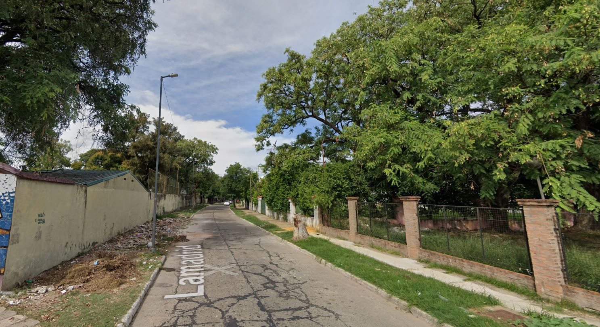
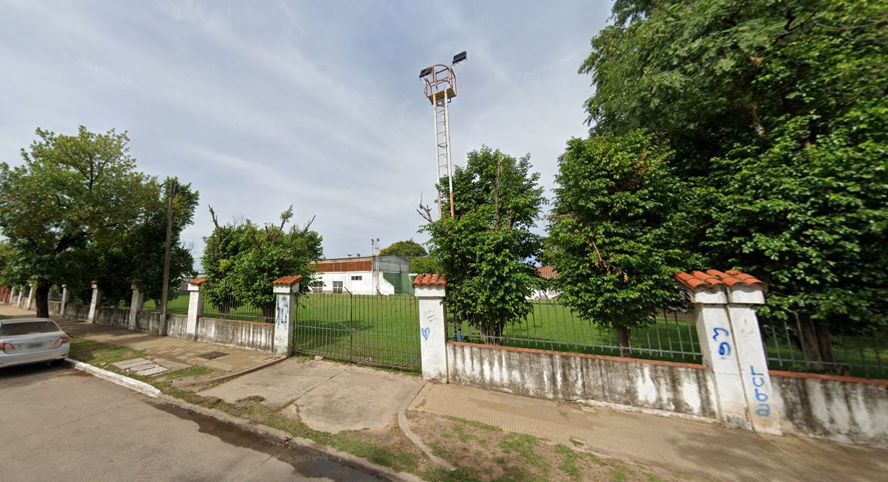
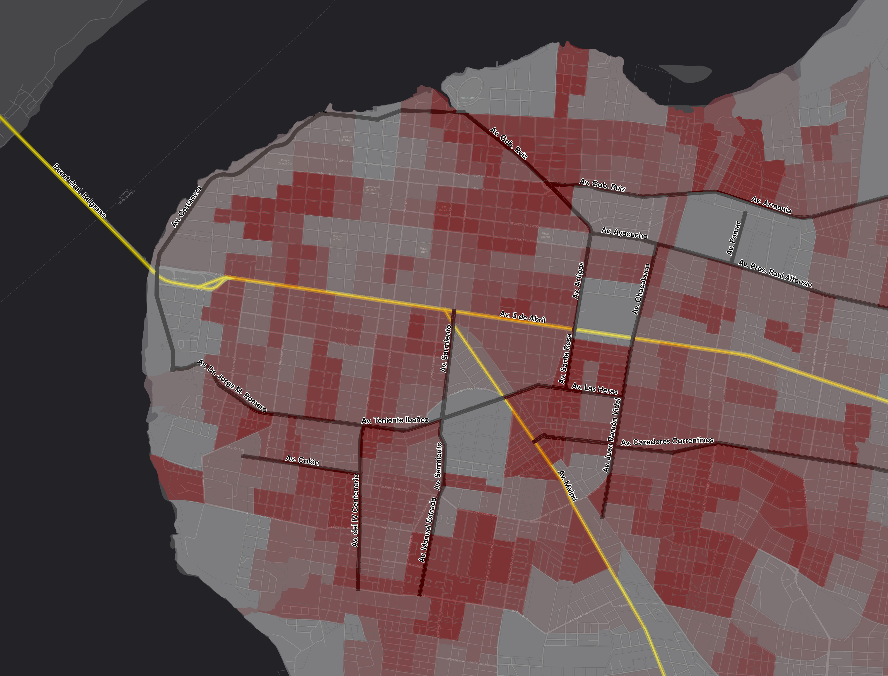

Proyecto Urbano · Corrientes, Argentina
Distrito
de Arte, Diseño y Cultura
de Arte, Diseño y Cultura
Chamamé, Arte, Diseño y Cultura
01 — Contexto Urbano
La Ciudad
de Corrientes
y su Estructura
de Corrientes
y su Estructura
• El Río Paraná y el puerto, como núcleo histórico
• El Puente Gral. Belgrano y la Ruta Nacional 12 como ejes de Conectividad Nacional
Convierten a la Avenida 3 de Abril como fragmentador Norte/Sur
• El ANILLO DE CIRCUNVALACIÓN como estrategia que promueve la integración
• El Puente Gral. Belgrano y la Ruta Nacional 12 como ejes de Conectividad Nacional
Convierten a la Avenida 3 de Abril como fragmentador Norte/Sur
• El ANILLO DE CIRCUNVALACIÓN como estrategia que promueve la integración
Corrientes • Capital

01 — El Triángulo Estratégico
Barrio
Berón de Astrada
Berón de Astrada
• Localización Estratégica y Geometría Vial
• Preservación del Tejido Residencial Interior
• Corredores viales que se complementan con la intención de alto flujo de potenciales usuarios
• Infraestructura existente en el Centro Sur
• Zona de Expansión Prioritaria según el POT Corrientes
• Preservación del Tejido Residencial Interior
• Corredores viales que se complementan con la intención de alto flujo de potenciales usuarios
• Infraestructura existente en el Centro Sur
• Zona de Expansión Prioritaria según el POT Corrientes
Barrio Berón de Astrada · Corrientes

01 — Contexto Urbano
Confluencia de Equipamientos y el Rol de Aviador Fernández
• Vínculo Diagonal y Conectividad Total
• Constituye un eje de vida e identidad interna y no de borde
• Encadena el área educativa, la Escuela de Arte, los espacios verdes y el Club Huracán.
• Detonador de Transformación Urbana
• Eje Creador de Nuevos Lugares
• Constituye un eje de vida e identidad interna y no de borde
• Encadena el área educativa, la Escuela de Arte, los espacios verdes y el Club Huracán.
• Detonador de Transformación Urbana
• Eje Creador de Nuevos Lugares
Barrio Berón de Astrada · Corrientes

02 — Diagnóstico del área
Situación actual
Av. Aviador Correa Fernández
Av. Aviador Correa Fernández
○ ESPACIO PUBLICO DESATENDIDO, SIN CONEXIÓN CON EL ENTORNO.
○ Tejido edilicio CERRADO Y HETEROGENEO.
○ BARRERAS VISUALES.
○ AUSENCIA de NEXOS Y CONEXIONES entre usos mixtos.
○ DECONEXIÓN entre infraestructura y vida pública.
Barrio Berón de Astrada · Corrientes
 Calle Aviador Correa Fernández, esquina República del Líbano
Calle Aviador Correa Fernández, esquina República del Líbano
 Calle Aviador Correa - Frente actual de Escuela Técnica
Calle Aviador Correa - Frente actual de Escuela Técnica
 Calle Aviador Correa Fernández, esquina Av. Sarmiento
Calle Aviador Correa Fernández, esquina Av. Sarmiento
02 — Diagnóstico del área
Situación actual
Calle Lamadrid
Calle Lamadrid
○ Corredor verde potencial SIN EQUIPAMIENTO URBANO.
○ DETERIORO de calzada y muros ciegos.
○ Vacío funcional y CALLE DE PASO.
○ INSEGURIDAD. Zonas sin iluminación, escasa vigilancia.
Barrio Berón de Astrada · Corrientes

Av. Sarmiento, esquina Calle Aviador Correa Fernández
Plazoleta Los Inmigrantes, sobre Av. Sarmiento Plazoleta Los Inmigrantes, sobre calle Aviador Correa Fernández
Plazoleta Los Inmigrantes, sobre calle Aviador Correa Fernández
02 — Diagnóstico del área
Situación actual
Plaza de las Americas
Plaza de las Americas
○ RESERVA VERDE PASIVA Subutilizada.
○ FALTA DE EQUIPAMIENTO, senderos e iluminación.
○ Bordes ciegos y DESCONEXION con la Av. A.C. Fernández.
Barrio Berón de Astrada · Corrientes
 Av. Sarmiento, esquina Calle Aviador Correa Fernández
Av. Sarmiento, esquina Calle Aviador Correa Fernández
 Plazoleta Los Inmigrantes, sobre Av. Sarmiento
Plazoleta Los Inmigrantes, sobre Av. Sarmiento
 Plazoleta Los Inmigrantes, sobre calle Aviador Correa Fernández
Plazoleta Los Inmigrantes, sobre calle Aviador Correa Fernández
— Propuesta
Nombre
02 — Alcance del Proyecto
Población
Beneficiada
Beneficiada
Para una ciudad de 15 minutos (POT de la Ciudad de Corrientes 2022), y un alcance de 800m, la intervención tiene un impacto directo en 22.900 personas, lo que equivale a unas 5.000 familias como beneficiarios directos, cubriendo alrededor de 258 has inmediatas al sector.
Barrio Berón de Astrada · Corrientes
